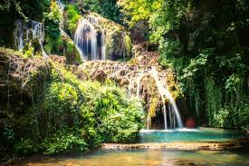
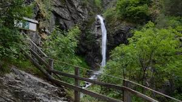

My name is Elena.I am 25 years old and live in Pernik.I own a small cigarette and liquor store where I work.
Bachelor's degree in Economy
Master's degree on national security and defense
I like to walk around our natural attractions, travel, listen music, shop and learn new and unknown things


Крушунски водопади
Водопад Горица (Овчарченски)
Пещера Проходна (Очите на Бога)
I expect to understand the basic things about html, javascript and front end programming and with more serious work I can start working in this field.
I would be interested in creating a site for a travel agency, for a shop or a site offering professional cleaning
I found out about the course from google, looking for present form of learning. I signed up because I want to become a front end developer and I decided that with the help of progress it would be faster and easier than learning online alone